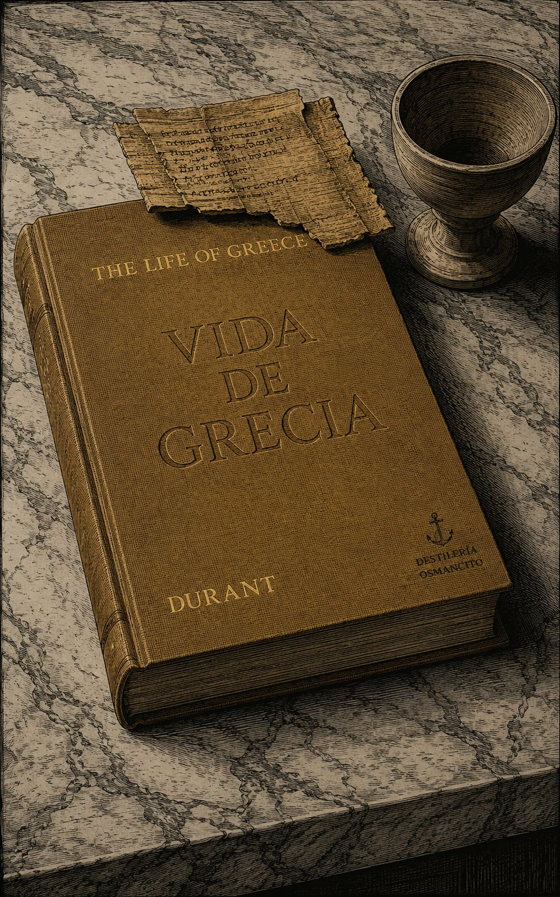
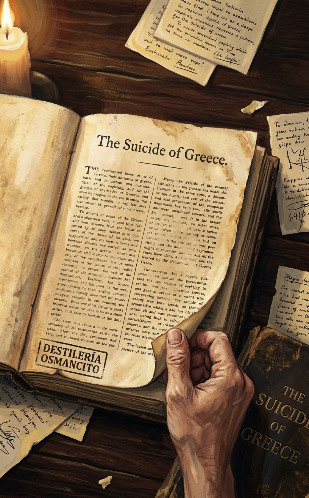
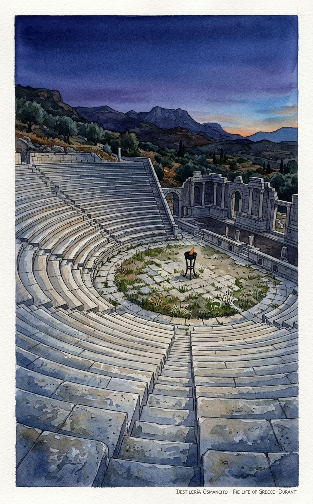
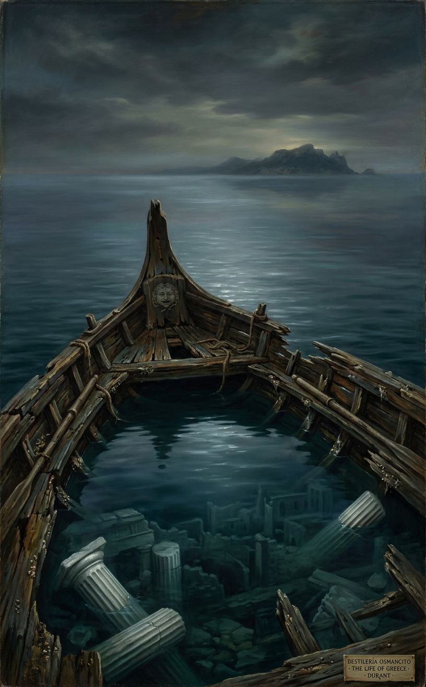
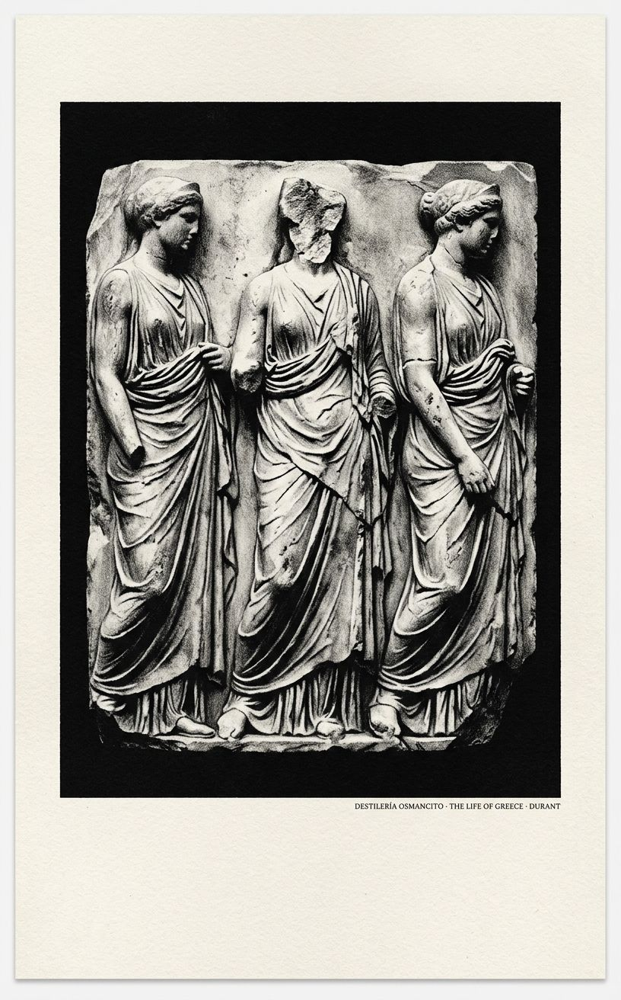

Una civilización que se narra a sí misma cargando ya el peso de saber que sobrevivió —que fue seminario del mundo y no pudo salvarse.
Llega un libro que pesa como una piedra de ágora. Tiene la densidad de algo que fue construido para durar, para ser consultado, para convertirse en referencia. La cubierta no promete intimidad: promete magnitud. Antes de abrirlo ya se presiente la ambición —la voluntad de un hombre de hacerse cargo, solo, de toda una civilización.
Nombrar lo que es este corpus no es resumir lo que dice: es reconocer que alguien decidió que Grecia entera —su barro, sus dioses, sus guerras, sus geómetras, sus cortesanas, su suicidio— podía caber en un solo volumen, y que ese alguien tenía razón y estaba equivocado al mismo tiempo.





La civilización más influyente de Occidente escribió sobre sí misma sin pudor y sin comprenderlo del todo; Durant llega veinte siglos después y hace lo mismo: lo comprende todo y no puede entender por qué todo aquello tuvo que acabar. Ahí, en esa brecha entre la inteligencia y el asombro, vive este libro.
Un libro que llega con la confianza de quien ha decidido que puede sostener en sus manos toda una civilización — y quizás tiene razón.
The Life of Greece es un peso. No metafóricamente: es la decisión de un hombre de hacerse cargo de todo — del barro cretense y de Platón, de las hetairas y de Arquímedes, del primer filósofo y del último general — y presentarlo como un solo organismo con un solo aliento. Nombrar este corpus no es decir que es “una historia de Grecia.” Es reconocer que es un acto de voluntad civilizatoria: la apuesta de que una mente sola puede sostener la magnitud de otra civilización sin que se le quiebre la espalda.
Título — The Life of Greece Autor — Will Durant Año — 1939 (segundo volumen de The Story of Civilization) Género — Historia cultural narrativa; ensayo histórico de síntesis Extensión estimada — Aproximadamente 300.000 palabras / 1.200 páginas / 30 capítulos organizados en 5 libros, más prefacio, tablas cronológicas y epílogo Idioma original — Inglés Palabra más frecuente con contenido — Greek (992 ocurrencias). Confirma lo que el corpus declara ser: un estudio de lo griego. Pero la segunda palabra más frecuente es Athens (701), lo que revela que el corpus, bajo su pretensión de hablar de toda Grecia, es profundamente ateniense en su centro de gravedad.
Will Durant emprende la narración total de la civilización griega: desde las primeras culturas del Egeo —Creta minoica, Micenas— hasta la conquista romana, pasando por el ascenso y caída de Atenas, el período helenístico y la dispersión de la cultura griega por el Mediterráneo y el Oriente. El libro es simultáneamente historia política, económica, cultural, filosófica, artística y moral; su argumento implícito es que la civilización griega no murió sino que se transformó en el sustrato de toda la cultura occidental.
Pericles — Estadista ateniense; figura central del período más alto de la democracia y la cultura griegas. Para Durant, el hombre más completo que Grecia produjo. Sócrates — Filósofo. Su juicio y muerte son el momento en que Atenas condena su propia conciencia. Platón y Aristóteles — Los dos grandes arquitectos del pensamiento griego; Durant los trata como fundadores de corrientes filosóficas que llegan hasta hoy. Alcibiades — Político y general; la encarnación de la hybris ateniense; su ambición y su traición aceleran la caída del Imperio. Alejandro — Conquistador macedonio; para Durant, el agente histórico que disolvió el mundo de las ciudades-estado y abrió la era helenística. Epicuro y Zenón — Filósofos del período helenístico; representan las dos formas de retiro ante el colapso del mundo cívico griego.
Libro I — Preludio egeo (3500–1000 a.C.): La civilización minoica de Creta florece como cultura marítima sofisticada, con arte avanzado, comercio y una organización palatial centralizada. La cultura micénica la sucede en el continente, fundando los mitos que Homero recogerá. La Edad Heroica, con sus guerreros aqueos y la guerra de Troya, marca el tránsito hacia la Grecia histórica.
Libro II — El ascenso de Grecia (1000–480 a.C.): Esparta construye su modelo militarista y oligárquico bajo la reforma de Licurgo. Atenas desarrolla su democracia a través de Solón, Clístenes y la tensión entre facciones. Los griegos colonizan el Mediterráneo. Las Guerras Médicas —Marathon, Termópilas, Salamina— producen la victoria sobre Persia y dan a Atenas el liderazgo del mundo griego.
Libro III — La Edad de Oro (480–399 a.C.): Pericles gobierna Atenas durante treinta años, convierte el tesoro de la Liga Délica en el financiamiento del Partenón, apoya a Fidias, Anaxágoras, Eurípides, Sócrates y Aspasia. La democracia ateniense alcanza su forma más plena y contradictoria. La Guerra del Peloponeso (431–404) es el suicidio: Atenas contra Esparta, guerra entre griegos, epidemia de plaga, aventura siciliana catastrófica, traición de Alcibiades, caída final. Sócrates es juzgado y condenado (399 a.C.).
Libro IV — Declinación y caída de la libertad griega (399–322 a.C.): Esparta domina brevemente; Tebas interrumpe esa dominación bajo Epaminondas. Atenas intenta recuperarse. Filipo de Macedonia unifica el norte y derrota a los griegos en Queronea (338 a.C.), poniendo fin a la independencia de las ciudades-estado. Demóstenes resiste sin éxito. Platón y Aristóteles producen en este período su obra filosófica más madura. Alejandro sucede a Filipo.
Libro V — La dispersión helenística (322–146 a.C.): Alejandro conquista Persia, Egipto, Asia Central e India en once años; funda Alejandría y muere en Babilonia a los 33 años (323 a.C.). Sus generales dividen el Imperio: los Seléucidas dominan Asia, los Ptolomeos gobiernan Egipto. La cultura griega se difunde por todo el Mediterráneo oriental y el Oriente Próximo. Alexandria se convierte en el centro intelectual del mundo antiguo: Euclides, Arquímedes, Eratóstenes. La filosofía se refugia en el Epicureísmo y el Estoicismo como respuestas al colapso del mundo cívico. Roma conquista Grecia (146 a.C.) y hereda su civilización.
El epílogo traza la línea directa de Grecia a la modernidad: la democracia, la ciencia, la filosofía, el teatro, la arquitectura, la medicina, el alfabeto. Durant concluye que “la civilización griega está viva; se mueve en cada aliento de mente que respiramos.”
Este libro no disimula su ambición ni su temperatura. Durant ama a Grecia con la intensidad de quien encontró en ella la justificación de la propia vida intelectual, y ese amor es a la vez su mayor virtud y su zona ciega. El corpus produce en quien lo recibe algo poco común en la historiografía: el placer genuino de la prosa combinado con la sospecha de que estamos siendo seducidos. Durant no es neutral, nunca pretende serlo, y esa honestidad es refrescante. Pero el precio es una Grecia que resplandece con una luz que el propio Durant proyecta.
Lo que el corpus irradia antes de ser analizado: la solemnidad de algo construido para durar, la calidez de alguien que realmente quería que otro entendiera, y una melancolía de fondo —la de quien narra una grandeza que ya se sabe perdida aunque nunca del todo muerta.
1. Libertad y suicidio: El corpus trabaja de forma sostenida la paradoja de que la civilización más libre de la Antigüedad fue destruida por su propia libertad —la libertad que produjo la democracia también produjo la demagogia, la que engendró a Pericles también engendró a Alcibiades, la que creó la filosofía también creó el juicio a Sócrates. Durant nunca resuelve esta tensión: la exhibe.
2. El particular contra el universal: Grecia es un mundo de ciudades-estado que nunca pudo construir un Estado, de individuos geniales que nunca pudieron sostenerse mutuamente, de un demos que adoraba la libertad pero no podía distribuirla. El corpus pregunta implícitamente, en cada capítulo, si la grandeza de la civilización griega fue posible gracias a esa fragmentación o a pesar de ella.
3. La herencia como paradoja: El epílogo proclama que Grecia vive en nosotros — pero el corpus entero muestra que Grecia no pudo vivir en sí misma. Lo que transmitió fue más duradero que ella. Durant no sabe si eso es un triunfo o una tragedia, y esa indecisión le da al libro su honradez más profunda.
Todos los problemas que nos perturban hoy —la deforestación y la erosión del suelo, la emancipación de la mujer y la limitación de la familia, el conservadurismo de los establecidos y el experimentalismo de los desplazados en moral, música y gobierno, la corrupción de la política y las perversiones de la conducta, el conflicto entre religión y ciencia, la guerra de las clases, las naciones y los continentes— todo eso agitó, como si fuera para nuestra instrucción, la vida brillante y turbulenta de la Hélade antigua. No hay nada en la civilización griega que no ilumine la nuestra.
Eso escribe Will Durant en el prefacio, y lo afirma sin ironía. La promesa es descomunal. Lo notable es que el libro la cumple.
El griego antiguo, tal como lo retrata Durant a través de Homero, no tiene nuestra moral. Tiene algo anterior y más crudo: una ética de guerra. El bien no es la mansedumbre ni la honradez sino la valentía sin escrúpulos, la inteligencia sin pudor. La virtud es virtus, manliness, areté, la cualidad de Ares. El buen hombre no es gentil ni fiel ni sobrio ni honesto: es simplemente alguien que pelea bien. Y el malo no es el que bebe demasiado, miente, mata o traiciona: es el cobarde, el estúpido, el débil. Hubo nietzscheanos mucho antes que Nietzsche, mucho antes que Trasímaco, en la ruidosa inmadurez del mundo europeo.
La mujer en esa misma época homérica ocupa un lugar sorprendentemente alto. Se mueve entre hombres y mujeres con libertad, participa en sus conversaciones, inspira sus guerras. La belleza de Helena le pone cara a una guerra que en el fondo es por tierra y comercio. Pero luego, en la Atenas de Pericles, algo ocurre. La mujer desaparece. Tucídides no la menciona. Se la encierra. Y lo que el libro revela, casi de pasada, es la paradoja: la seclusion de la mujer respetable produce la prostitución floreciente de la hetaira, y la ausencia de mujeres educadas produce la proliferación de la homosexualidad masculina, y todo eso junto produce una sociedad unisexual que pierde la gracia y el estímulo que la presencia femenina habría dado al Renacimiento italiano o a la Ilustración francesa.
Los atenienses son demasiado brillantes para ser buenos, y desprecian la estupidez más de lo que abominan el vicio. Siempre predicando una calma parmenídea y siempre arrojados sobre un mar heraclíteo. Ningún pueblo tuvo nunca una imaginación más viva ni una lengua más rápida. El secreto de la exuberancia de la vida y el pensamiento griegos reside en esto: que para el griego, el hombre es la medida de todas las cosas. El ateniense educado está enamorado de la razón, y raramente duda de su capacidad para cartografiar el universo. El deseo de conocer y comprender es su pasión más noble, y tan desmesurado como el resto.
Y sin embargo —esto es lo que Durant ve con más claridad— esa misma democracia que produce a Pericles y a Fidias y a Sócrates acaba matando a Sócrates. La libertad que engendra el genio engendra también la demagogia. Cleon el talabartero, el que se subía al estrado en ropa de trabajador, el que convenció a la asamblea de ejecutar a los generales victoriosos de Arginusas sin proceso y luego permitió que esa misma asamblea condenara a quienes la habían convencido. La irresponsabilidad de una asamblea que puede votar su pasión momentánea un día, y al día siguiente votar su arrepentimiento apasionado, castigando entonces no a sí misma sino a quienes la condujeron: ese es el vicio estructural que Durant observa sin resolverlo, porque es irresoluble.
En Melos, 416 a.C., los enviados atenienses explican a los melios por qué deben rendirse. Su argumento no tiene evasivas: los dioses, según creemos, y los hombres, según sabemos, dominan por necesidad natural donde pueden. No somos los primeros en establecer esta ley ni los últimos en practicarla; la encontramos ya existente antes y la dejaremos existente después de nosotros. Los melios se niegan, confían en los dioses. Las tropas atenienses llegan como refuerzo irresistible. Los melios se rinden. Los atenienses matan a todos los hombres adultos, venden a mujeres y niños como esclavos, y entregan la isla a quinientos colonos atenienses. Atenas se regocija en la conquista, y se prepara para ilustrar, en una tragedia viva, el tema de sus dramaturgos: que una némesis vengativa persigue todo éxito insolente.
Diez años después, la expedición a Sicilia acaba en catástrofe. La flota destruida. Los ciudadanos, casi todos de clase, enviados a morir en las canteras de Siracusa, donde prueban la misma suerte que durante generaciones recayó sobre quienes trabajaban las minas de Laurión. La democracia no aprendió de Melos. No aprendía.
Alcibiades es la encarnación de eso. Guapo, brillante, sin escrúpulo alguno, discípulo amado de Sócrates y amante de la gloria antes que de la ciudad. Convenció a la asamblea de atacar Sicilia con una elocuencia que Durant retrata como el tipo de embriaguez al que una democracia es más vulnerable: el joven ardiente que promete grandeza y esconde el hueco donde debería estar la prudencia. Cuando la flota partió, ya había sido acusado de profanar los misterios eleusinos; el barco Salaminia lo alcanzó para arrestarlo; él escapó a tierra en Turios y se pasó a Esparta. Desde Esparta aconsejó a los lacedemonios cómo destruir lo que él mismo había contribuido a construir. Luego huyó a Persia. Luego regresó a Atenas como salvador. Luego fue destituido otra vez. Murió acribillado a flechas en Frigia, a los 46 años, reconocido como el mayor genio y el más trágico fracaso de la historia militar de Grecia.
Diógenes de Sínope vivió en un tonel en el atrio del templo de Cibeles. Intentaba imitar la vida simple de los animales: dormía en el suelo, comía lo que encontraba donde lo encontraba, realizaba a la vista de todos los deberes de la naturaleza y los ritos del amor. Cuando vio a un niño beber con las manos, tiró su copa. A veces cargaba una linterna o una vela, diciendo que buscaba a un hombre. Capturado por piratas y vendido como esclavo a Xeniades de Corinto, cuando su amo le preguntó qué sabía hacer, respondió: Gobernar hombres. Su amo lo nombró tutor de sus hijos y administrador de su casa, y lo llamó buen genio.
Cuando Alejandro se acercó a donde Diógenes tomaba el sol y le dijo Soy Alejandro, el Gran Rey, el filósofo respondió Yo soy Diógenes, el perro. Alejandro le ofreció cualquier favor. Diógenes le pidió que se quitara del sol. Alejandro dijo: Si no fuera Alejandro, querría ser Diógenes. No consta que el filósofo devolviera el cumplido.
Los dos murieron, según se afirma, el mismo año: Alejandro en Babilonia a los treinta y tres años, Diógenes en Corinto a los noventa. A Alejandro le preguntaron a quién dejaba su imperio. Respondió: Al más fuerte. Corinto levantó sobre la tumba de Diógenes un perro de mármol.
Phryne era la comidilla de la Atenas del siglo cuarto. Nunca aparecía en público sino completamente velada; pero en el festival eleusino, y otra vez en la fiesta de las Poseidonia, se desvestía a la vista de todos, soltaba el cabello y se iba a bañar al mar. Inspiró a Praxíteles sus Afroditas; de ella también tomó Apeles su Afrodita Anadyomene. Era tan rica que ofreció reconstruir las murallas de Tebas si los tebanos inscribían su nombre en ellas. Los tebanos se negaron obstinadamente. Cuando fue acusada de impiedad, su amante Hipérides la defendió no solo con elocuencia sino abriendo su túnica y mostrando su pecho al tribunal. Los jueces contemplaron su belleza y vindicaron su piedad.
Epicuro inicia su filosofía con una proposición que Durant llama arresting: el propósito de la filosofía es liberar a los hombres del miedo, y ante todo del miedo a los dioses. Los dioses existen, dice Epicuro, y disfrutan en algún espacio lejano entre las estrellas de una vida serena e inmortal; pero son demasiado sensatos para ocuparse de los asuntos de una especie tan infinitesimal como la humanidad. No pueden vigilarte, no pueden juzgarte, no pueden arrojarte al infierno. El miedo a los dioses desaparece. El miedo a la muerte también, con un poco de geometría: si el alma muere con el cuerpo, no hay nadie que sufra la muerte. El sumo bien que queda, reducida la filosofía a lo que puede garantizar, es una cosa modesta y casi imposible: la tranquilidad.
Zenón el estoico llega a la conclusión opuesta por el camino opuesto: el universo entero es dios, el dios es razón, la razón es ley, la ley me incluye. El sabio que comprende esto no teme nada porque todo lo que ocurre es, en algún sentido que la pequeñez humana no alcanza a ver enteramente, la mejor forma en que podía ocurrir. Apatheia: la ausencia de pasión perturbadora. Cuando un esclavo citó el determinismo para justificar un robo, Zenón respondió: Y que yo te golpee también estaba determinado. Cleantes, el sucesor de Zenón, que había llegado a Atenas con cuatro dracmas y durante años trabajó de noche como aguador para asistir de día a las clases de filosofía, dejó escrito un himno a Zeus que Durant compara con Akenatón y con Isaías: Tuyo es el poder para siempre. El principio del mundo viene de ti. Con la ley, gobernarás todas las cosas. A ti pueda hablar toda carne, pues somos tu descendencia.
Ambas filosofías —la epicúrea y la estoica— son respuestas al mismo colapso: el mundo de las ciudades-estado había terminado. La política ya no era un espacio donde el ciudadano libre podía actuar. Quedaba solo el yo, y cómo sostenerlo.
Cuando la noticia de la muerte de Alejandro llegó a Grecia, Demóstenes se puso ropa de fiesta, se colocó una corona de flores y propuso en la asamblea que se votara una corona de honor para el asesino de Filipo. Por un momento pareció que había libertad de nuevo. Antípatro, el general macedonio que quedó en Grecia, aplastó la revuelta, impuso condiciones durísimas y exigió la entrega de Demóstenes. El orador huyó a Calauria y se refugió en un templo. Rodeado de perseguidores macedonios, bebió veneno y murió antes de poder arrastrarse fuera del recinto sagrado.
Ese mismo año murió también Aristóteles, que había huido de Atenas tras ser acusado de impiedad, diciendo que no daría a Atenas la oportunidad de pecar dos veces contra la filosofía. Murió en Calcis, de enfermedad o de veneno, según distintas fuentes, a los sesenta y tres años. Su testamento fue, según Durant, un modelo de consideración cariñosa hacia su segunda esposa, su familia y sus esclavos.
La democracia había muerto. La filosofía sobrevivió en libros. La ciudad sobrevivió como ruina habitada. Y Durant concluye con una frase que podría ser la epigráfica de todo el libro: La civilización no muere, migra; cambia su hábitat y su vestido, pero sigue viviendo. La civilización griega está viva; se mueve en cada aliento de mente que respiramos.
Valor. Este corpus merece más que el lugar que ocupa. Durant es un divulgador —en el mejor sentido del término, que no debería ser menor— y The Life of Greece es la demostración de que la erudición puede ser también escritura. Que alguien haya logrado cubrir 3.400 años de civilización en un solo volumen con esta densidad de detalle y esta soltura de prosa es, en sí mismo, un logro que merece respeto. El libro tiene defectos reales: el amor de Durant por Grecia es tan intenso que a veces lo ciega frente a sus sombras, y hay capítulos enteros que son más enciclopédicos que vivos. Pero en sus momentos altos —Alcibiades, Diógenes, la caída— produce algo raro: el placer de entender.
Goce. Se disfruta. No todo, no siempre —hay secciones áridas—, pero hay pasajes que se leen con la misma velocidad con que se lee una novela, y con un residuo que la novela no siempre deja: el de haber comprendido algo sobre cómo funciona el mundo y cómo funciona el poder y cómo funcionan los hombres. Durant tiene humor, tiene piedad, y tiene la honestidad del que admira profundamente algo y se niega a mentir sobre sus defectos. Eso es difícil de conseguir, y cuando se consigue, es un goce.